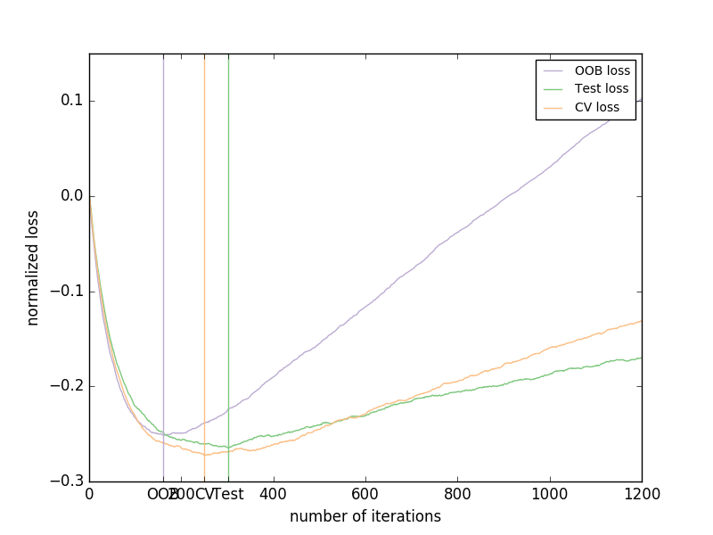

Gradient Boosting Out-of-Bag estimates¶
Out-of-bag (OOB) estimates can be a useful heuristic to estimate
the “optimal” number of boosting iterations.
OOB estimates are almost identical to cross-validation estimates but
they can be computed on-the-fly without the need for repeated model
fitting.
OOB estimates are only available for Stochastic Gradient Boosting
(i.e. subsample < 1.0), the estimates are derived from the improvement
in loss based on the examples not included in the bootstrap sample
(the so-called out-of-bag examples).
The OOB estimator is a pessimistic estimator of the true
test loss, but remains a fairly good approximation for a small number of trees.
The figure shows the cumulative sum of the negative OOB improvements as a function of the boosting iteration. As you can see, it tracks the test loss for the first hundred iterations but then diverges in a pessimistic way. The figure also shows the performance of 3-fold cross validation which usually gives a better estimate of the test loss but is computationally more demanding.
Script output:
Accuracy: 0.6840
Python source code: plot_gradient_boosting_oob.py
print(__doc__)
# Author: Peter Prettenhofer <peter.prettenhofer@gmail.com>
#
# License: BSD 3 clause
import numpy as np
import matplotlib.pyplot as plt
from sklearn import ensemble
from sklearn.cross_validation import KFold
from sklearn.cross_validation import train_test_split
# Generate data (adapted from G. Ridgeway's gbm example)
n_samples = 1000
random_state = np.random.RandomState(13)
x1 = random_state.uniform(size=n_samples)
x2 = random_state.uniform(size=n_samples)
x3 = random_state.randint(0, 4, size=n_samples)
p = 1 / (1.0 + np.exp(-(np.sin(3 * x1) - 4 * x2 + x3)))
y = random_state.binomial(1, p, size=n_samples)
X = np.c_[x1, x2, x3]
X = X.astype(np.float32)
X_train, X_test, y_train, y_test = train_test_split(X, y, test_size=0.5,
random_state=9)
# Fit classifier with out-of-bag estimates
params = {'n_estimators': 1200, 'max_depth': 3, 'subsample': 0.5,
'learning_rate': 0.01, 'min_samples_leaf': 1, 'random_state': 3}
clf = ensemble.GradientBoostingClassifier(**params)
clf.fit(X_train, y_train)
acc = clf.score(X_test, y_test)
print("Accuracy: {:.4f}".format(acc))
n_estimators = params['n_estimators']
x = np.arange(n_estimators) + 1
def heldout_score(clf, X_test, y_test):
"""compute deviance scores on ``X_test`` and ``y_test``. """
score = np.zeros((n_estimators,), dtype=np.float64)
for i, y_pred in enumerate(clf.staged_decision_function(X_test)):
score[i] = clf.loss_(y_test, y_pred)
return score
def cv_estimate(n_folds=3):
cv = KFold(n=X_train.shape[0], n_folds=n_folds)
cv_clf = ensemble.GradientBoostingClassifier(**params)
val_scores = np.zeros((n_estimators,), dtype=np.float64)
for train, test in cv:
cv_clf.fit(X_train[train], y_train[train])
val_scores += heldout_score(cv_clf, X_train[test], y_train[test])
val_scores /= n_folds
return val_scores
# Estimate best n_estimator using cross-validation
cv_score = cv_estimate(3)
# Compute best n_estimator for test data
test_score = heldout_score(clf, X_test, y_test)
# negative cumulative sum of oob improvements
cumsum = -np.cumsum(clf.oob_improvement_)
# min loss according to OOB
oob_best_iter = x[np.argmin(cumsum)]
# min loss according to test (normalize such that first loss is 0)
test_score -= test_score[0]
test_best_iter = x[np.argmin(test_score)]
# min loss according to cv (normalize such that first loss is 0)
cv_score -= cv_score[0]
cv_best_iter = x[np.argmin(cv_score)]
# color brew for the three curves
oob_color = list(map(lambda x: x / 256.0, (190, 174, 212)))
test_color = list(map(lambda x: x / 256.0, (127, 201, 127)))
cv_color = list(map(lambda x: x / 256.0, (253, 192, 134)))
# plot curves and vertical lines for best iterations
plt.plot(x, cumsum, label='OOB loss', color=oob_color)
plt.plot(x, test_score, label='Test loss', color=test_color)
plt.plot(x, cv_score, label='CV loss', color=cv_color)
plt.axvline(x=oob_best_iter, color=oob_color)
plt.axvline(x=test_best_iter, color=test_color)
plt.axvline(x=cv_best_iter, color=cv_color)
# add three vertical lines to xticks
xticks = plt.xticks()
xticks_pos = np.array(xticks[0].tolist() +
[oob_best_iter, cv_best_iter, test_best_iter])
xticks_label = np.array(list(map(lambda t: int(t), xticks[0])) +
['OOB', 'CV', 'Test'])
ind = np.argsort(xticks_pos)
xticks_pos = xticks_pos[ind]
xticks_label = xticks_label[ind]
plt.xticks(xticks_pos, xticks_label)
plt.legend(loc='upper right')
plt.ylabel('normalized loss')
plt.xlabel('number of iterations')
plt.show()
Total running time of the example: 3.70 seconds ( 0 minutes 3.70 seconds)